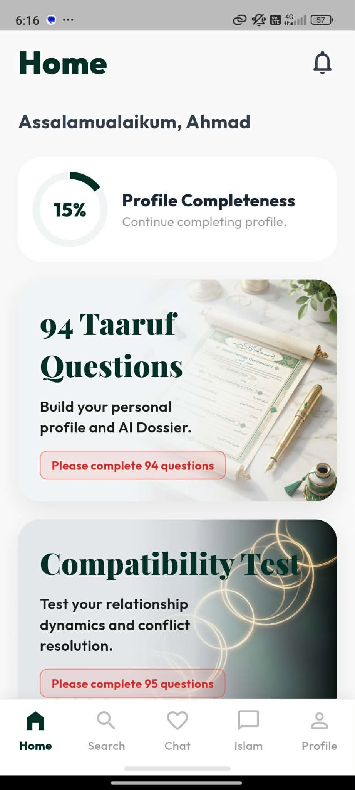

PROJECT 01 / ANDROID — MALAYSIA
Flutter · Android
Halal Matchmaking App — AI Compatibility Engine
A production Flutter Android application built for a client in Malaysia. Users complete a structured profile — about themselves and what they're looking for in a partner — and an AI compatibility engine scores every potential match, surfacing a live compatibility percentage for each profile shown.
Product screenshot — Android app
System architecture

UI Layer — Profile & Discovery
↓ reads / writes ↓
Riverpod — State Controllers
↓ scores matches ↓
AI Compatibility Engine
↓ persists ↓
Firebase — Cloud Database & Auth
500+
Followers in 48 hours
0
Paid promotion used
94
Profile questions per user
Key features
- Comprehensive halal matchmaking platform featuring over 70 distinct screens, including full user profiles, discovery feeds, and secure in-app chat
- Guided taaruf-style questionnaire building a structured, halal-conscious personal profile and AI dossier
- AI compatibility scoring engine comparing each user's answers against a prospective match's stated preferences
- Reached 500+ followers within 2 days of launch with zero paid promotion, on organic interest alone
Tech stack
FlutterDartRiverpodFirebaseAndroid